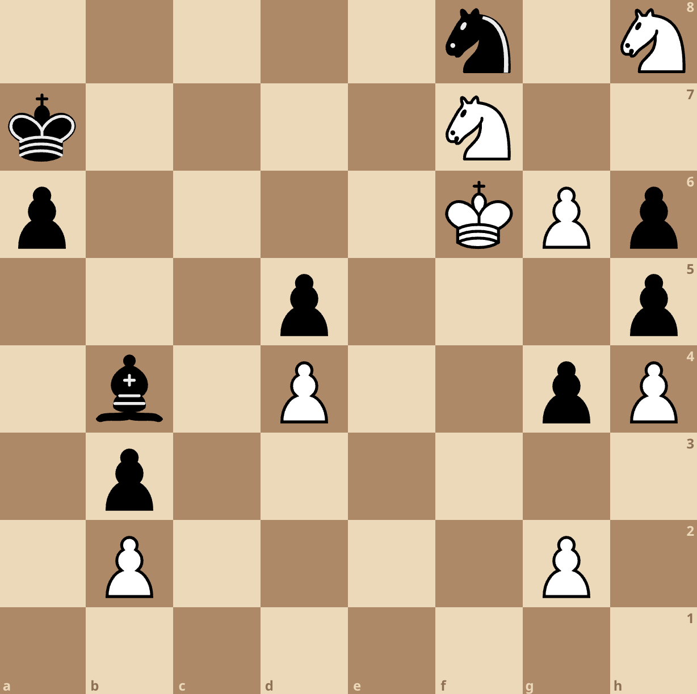

How does black win this position?
Hint: If you're in the know, the motif here is similar to that in the beautiful Topalov-Shirov game in 1998.
Solution: We sacrifice our knight by capturing white's advanced pawn on g6, and then play the remarkable Ba3! Regardless of whether white captures our bishop or allows us to capture on b2 the next turn, he is not in time to stop our b-pawn.
I had this position in a 3+2 blitz game I played on Lichess a while ago. I was incredibly happy to have found the winning idea (I was actually about to resign — after all, black is completely lost without this resource). This is one of the things I most enjoy about this game: there are very often fantastic defensive resources even in hopeless positions. On the other hand, it is also something that makes chess so unforgiving, as my opponent would have learned: you can play a strong game (as my opponent did) and one slight inaccuracy can turn the tables entirely. All of this in many ways resembles real life.
If you also play chess, please, let's talk.